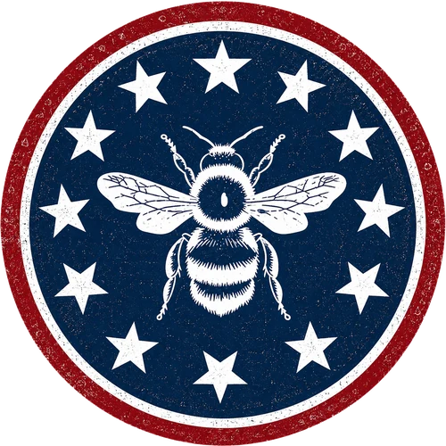

A1 · Comprehensive Review
Test Yourself
One long review test covering all 20 A1 grammar topics — rules, examples, common mistakes and interactive exercises for each, in order.

This test walks through every A1 grammar topic in order. Each section gives you a quick rules recap, examples of common mistakes, and then interactive exercises — so you can check your answers instantly. There are 186 individual exercise items in total across all 20 topics.
Topic 1 of 20
Basic Greetings & Introductions
Say hello, ask how someone is, and introduce yourself.
- Good morning / Good afternoon / Good evening change with the time of day
- Hello and Hi are used at any time of day
- “Good night” is a farewell, never a greeting
- “How are you?” → “Fine, thanks. And you?”
- “Nice to meet you” is only for the first time you meet someone
AvoidGood night!” (said when arriving)
Use insteadGood evening!
“Good night” is only for saying goodbye — use “Good evening” to greet someone after 6pm.
AvoidI have 20 years.
Use insteadI am 20 years old.
English uses the verb to be for age, not have — a common slip when translating directly from Portuguese or Spanish.
AvoidI are Carlos.
Use insteadI am Carlos.
The verb to be changes with the subject: I am, you/we/they are, he/she/it is.
Topic 2 of 20
Numbers (Cardinal and Ordinal)
Count things and put them in order.
- Cardinal numbers = how many (1, 2, 3…)
- Ordinal numbers = order, position (1st, 2nd, 3rd…)
- Most ordinals add -th: four → fourth, six → sixth
- 1st (first), 2nd (second) and 3rd (third) are irregular
- Ordinals ending in -y change to -ieth: twenty → twentieth
AvoidI am the two in the line.
Use insteadI am the second in the line.
Position needs the ordinal form (second), not the cardinal (two).
AvoidShe lives on the five floor.
Use insteadShe lives on the fifth floor.
Floors use ordinal numbers: fifth, not five.
AvoidMy birthday is on May two.
Use insteadMy birthday is on May second.
Dates in English are usually read with ordinal numbers.
Topic 3 of 20
Subject and Object Pronouns
Know when to use I vs. me, she vs. her, they vs. them.
- Subject pronouns: I, you, he, she, it, we, they
- Object pronouns: me, you, him, her, it, us, them
- “You” and “it” are the same in both roles
- Object pronouns follow the verb or a preposition (to, with, for...)
AvoidMe am a student.
Use insteadI am a student.
The subject of a sentence needs a subject pronoun: I, not me.
AvoidI see she every day.
Use insteadI see her every day.
After a verb, use the object pronoun: her, not she.
AvoidHim is my brother.
Use insteadHe is my brother.
The subject of the sentence needs “he,” not “him.”
Topic 4 of 20
Possessive Pronouns (with Subject & Object Review)
Show who something belongs to — and review subject/object pronouns.
- Possessive adjective + noun: my book, her car, their house
- Possessive pronoun (no noun after it): mine, yours, his, hers, its, ours, theirs
- “Its” (possessive) has no apostrophe — “it's” means “it is”
- “His” is identical as an adjective and a pronoun
AvoidThis book is my.
Use insteadThis book is mine.
Without a noun after it, use the possessive pronoun “mine,” not the adjective “my.”
AvoidThe dog wagged it's tail.
Use insteadThe dog wagged its tail.
“Its” (possession) has no apostrophe. “It's” always means “it is.”
AvoidIs this bag yours bag?
Use insteadIs this bag yours?
A possessive pronoun already replaces the noun — don't repeat “bag” after “yours.”
Topic 5 of 20
Articles: A, An, The
Know when to say a, an, the — or nothing at all.
- A / An → first mention, singular, non-specific
- A before a consonant sound; An before a vowel sound
- The → specific thing, already mentioned, or unique (the sun, the internet)
- No article before plural or uncountable nouns used in general (I like coffee, not I like the coffee)
AvoidI saw an dog.
Use insteadI saw a dog.
“Dog” starts with a consonant sound, so it needs “a,” not “an.”
AvoidShe is a honest person.
Use insteadShe is an honest person.
“Honest” starts with a vowel sound (the h is silent), so it needs “an.”
AvoidI like the coffee.
Use insteadI like coffee.
A general statement about coffee (not one specific cup) uses no article.
Topic 6 of 20
This, That, These, Those
Point to things that are near or far, singular or plural.
- This / These → near the speaker
- That / Those → far from the speaker
- This, that → singular
- These, those → plural
AvoidThis are my keys.
Use insteadThese are my keys.
“Keys” is plural, so it needs “these,” not “this.”
AvoidThose is my friend.
Use insteadThat is my friend.
A single friend needs the singular form “that,” and the verb “is.”
AvoidI like this shoes.
Use insteadI like these shoes.
“Shoes” is plural, so the demonstrative must agree: these.
Topic 7 of 20
Nouns & Plurals
Name people, places and things — and make them plural correctly.
- Most nouns → add -s (cat → cats)
- Nouns ending in -s, -sh, -ch, -x, -z → add -es (bus → buses)
- Consonant + y → change y to -ies (lady → ladies)
- Vowel + y → just add -s (boy → boys)
- Some plurals are irregular: child → children, man → men, woman → women
AvoidI have two childs.
Use insteadI have two children.
“Child” has an irregular plural: children, not childs.
AvoidThere are three bus.
Use insteadThere are three buses.
Words ending in -s add -es for the plural: buses.
AvoidThe ladys are here.
Use insteadThe ladies are here.
Consonant + y changes to -ies: lady → ladies.
Topic 8 of 20
Adjectives
Describe nouns — and put adjectives in the right order.
- Adjectives usually come before the noun: a big house
- Adjectives do not change form for plural nouns (two big houses, not two bigs houses)
- Typical order: opinion → size → age → shape → color → origin → material → purpose
- Adjectives can also follow “to be”: The house is big.
AvoidI have two bigs dogs.
Use insteadI have two big dogs.
Adjectives never take a plural -s in English, even with plural nouns.
AvoidA red big car.
Use insteadA big red car.
Size normally comes before color in English adjective order.
AvoidThe house is a big.
Use insteadThe house is big.
After “to be,” an adjective stands alone — no article is needed.
Topic 9 of 20
Prepositions: In, On, At
Place things and events correctly in space and time.
- In → inside / enclosed space / months / years
- On → surface / specific days / dates / floors
- At → specific point / exact clock time
- In the morning/afternoon/evening, but at night
AvoidI will see you in Monday.
Use insteadI will see you on Monday.
Specific days use “on,” not “in.”
AvoidThe party is in 8pm.
Use insteadThe party is at 8pm.
Exact clock times always use “at.”
AvoidShe lives at Brazil.
Use insteadShe lives in Brazil.
Countries and cities (enclosed spaces) use “in.”
Topic 10 of 20
Conjunctions: And, But, Or
Connect ideas with the three most common linking words.
- And = addition (I like apples and oranges.)
- But = contrast (I like apples, but I don't like oranges.)
- Or = choice / alternative (Tea or coffee?)
- Use a comma before “but” when joining two complete sentences
AvoidI like tea but coffee.
Use insteadI like tea or coffee.
A choice between two things needs “or,” not “but.”
AvoidShe is tall or friendly.
Use insteadShe is tall and friendly.
Two compatible qualities are simply added together with “and,” not “or.”
AvoidIt was cold, and I still went out.
Use insteadIt was cold, but I still went out.
An unexpected contrast needs “but,” not “and.”
Topic 11 of 20
To Be (Am, Is, Are)
The most important verb in English — master it first.
- Affirmative: I am, He/She/It is, You/We/They are
- Negative: I am not, He/She/It is not (isn't), You/We/They are not (aren't)
- Question: Am I...? / Is he...? / Are they...?
- Contractions: I'm, he's, she's, it's, you're, we're, they're
AvoidI is a teacher.
Use insteadI am a teacher.
“I” always pairs with “am,” never “is” or “are.”
AvoidThey am friends.
Use insteadThey are friends.
“They” pairs with “are,” not “am.”
AvoidShe are happy.
Use insteadShe is happy.
Singular subjects like “she” pair with “is,” not “are.”
Topic 12 of 20
Simple Present I
Talk about routines, habits and facts.
- I/You/We/They + base verb (I work, they go)
- He/She/It + verb -s or -es (she works, he watches)
- Verbs ending -s, -sh, -ch, -x, -o often add -es (goes, watches)
- Consonant + y → -ies (study → studies)
AvoidShe go to work.
Use insteadShe goes to work.
Third person singular (she) needs -es on “go”: goes.
AvoidHe study every night.
Use insteadHe studies every night.
“Study” ends consonant + y, so the third person form is “studies.”
AvoidI likes coffee.
Use insteadI like coffee.
“I” uses the base verb — the -s ending only applies to he/she/it.
Topic 13 of 20
Have / Has
Talk about possession, family and features.
- I/You/We/They + have
- He/She/It + has
- Negative: don't have / doesn't have
- Question: Do you have...? / Does she have...?
AvoidShe have a car.
Use insteadShe has a car.
“She” needs “has,” not “have.”
AvoidHe don't have time.
Use insteadHe doesn't have time.
Third person singular needs the auxiliary “doesn't,” not “don't.”
AvoidDoes you have a pen?
Use insteadDo you have a pen?
“You” takes the auxiliary “do,” not “does.”
Topic 14 of 20
Yes/No Questions
Ask questions that can be answered with a simple yes or no.
- Be (am/is/are) → Am I...? / Is he...? / Are they...?
- Do/Does → Do you...? / Does she...?
- Can / Have / Has → Can you...? / Have you...? / Has she...?
- Short answers: Yes, I am. / No, she doesn't. / Yes, they can.
AvoidDo she like coffee?
Use insteadDoes she like coffee?
Third person singular (she) needs “does,” not “do.”
AvoidDoes you have a pen?
Use insteadDo you have a pen?
“You” needs “do,” not “does.”
AvoidIs you ready?
Use insteadAre you ready?
“You” needs “are,” not “is.”
Topic 15 of 20
Wh- Questions (Who, What, Where, When, Why, How)
Ask for specific information, not just yes or no.
- What → things / ideas
- Where → place
- When → time
- Who → person
- Why → reason
- How → manner / way
AvoidWhere you live?
Use insteadWhere do you live?
Wh- questions with ordinary verbs still need “do/does,” just like yes/no questions.
AvoidWhat means this word?
Use insteadWhat does this word mean?
The auxiliary “does” comes before the subject, and the main verb stays in its base form.
AvoidWho is coming?
Use insteadWho is coming?
(This one is already correct — “who” as the subject doesn't need do/does.)
Topic 16 of 20
There Is / There Are
Say what exists, without naming who owns it.
- There is → singular + uncountable nouns
- There are → plural nouns
- Negative: There isn't / There aren't
- Question: Is there…? / Are there…?
AvoidThere is three books on the table.
Use insteadThere are three books on the table.
“Three books” is plural, so it needs “there are,” not “there is.”
AvoidThere are a problem.
Use insteadThere is a problem.
“A problem” is singular, so it needs “there is.”
AvoidIs there any apples?
Use insteadAre there any apples?
“Apples” is plural, so the question needs “are there,” not “is there.”
Topic 17 of 20
Present Continuous I
Talk about what's happening right now.
- Affirmative: am / is / are + verb-ing
- Negative: am / is / are + not + verb-ing
- Question: Am / Is / Are + subject + verb-ing?
- Used for actions happening now, or temporary situations
AvoidI am study English.
Use insteadI am studying English.
The main verb needs the -ing ending in the present continuous.
AvoidShe is cook dinner.
Use insteadShe is cooking dinner.
Missing -ing: it should be “cooking,” not “cook.”
AvoidThey is playing football.
Use insteadThey are playing football.
“They” needs “are,” not “is.”
Topic 18 of 20
Imperatives (Review and Expand)
A mixed review that puts your A1 tenses to work in one story.
- Past simple → completed actions in the story (decided, planned, arrived)
- Present continuous → something happening at that moment (are visiting)
- Future simple → plans mentioned in dialogue (we will go)
- Imperatives → direct instructions inside quoted speech (“Pack your bags.”)
AvoidLast summer, they decide to go.
Use insteadLast summer, they decided to go.
A completed past action needs the past simple: decided.
AvoidWake up early tomorrow (as a statement to yourself)
Use insteadWake up early tomorrow.
Imperatives use the base verb with no subject — this is already correct as a command.
AvoidThey visit many sites right now.
Use insteadThey are visiting many sites right now.
“Right now” signals the present continuous, not the simple present.
Topic 19 of 20
Possessive Pronouns in Context
Practice mine, yours, his, hers, its, ours and theirs in a real story.
- I → mine
- you → yours
- he → his
- she → hers
- it → its
- we → ours
- they → theirs
AvoidThis plan is my.
Use insteadThis plan is mine.
With no noun after it, the possessive pronoun “mine” is needed, not the adjective “my.”
AvoidCan you share your with me?
Use insteadCan you share yours with me?
“Your” needs a noun after it; “yours” stands alone.
AvoidThose books are her.
Use insteadThose books are hers.
“Her” needs a noun after it (her books); on its own, use “hers.”
Topic 20 of 20
Imperatives
Give instructions, commands and polite requests.
- Affirmative: base verb (Open the door. / Sit down.)
- Negative: Do not / Don't + base verb (Don't run. / Do not touch.)
- Be polite: Please + imperative
- No subject is used in an imperative sentence
AvoidYou open the door.
Use insteadOpen the door.
Imperatives don't use a subject — just the base verb.
AvoidNot touch that.
Use insteadDon't touch that.
Negative imperatives need “don't” (or “do not”), not just “not.”
AvoidOpens the window.
Use insteadOpen the window.
Imperatives always use the base verb, never the -s form.
You've reached the end of the A1 Test Yourself.
Ready for more? Continue on, or head back to the A1 overview to revisit any topic.